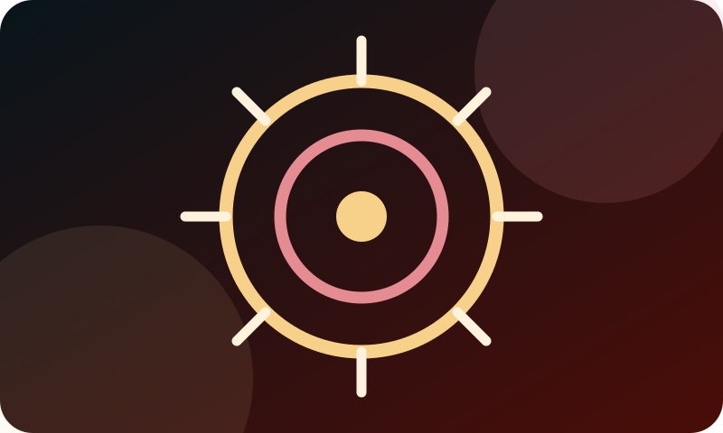

01
Platinum Core 777
Glavno razvojno jezgro i autorski okvir iz kog su nastale različite digitalne inicijative.
Od lične ideje do projekta
Pomoć kod izvršitelja je razvijena kao posebna inicijativa sa jasnom namenom: da ljudima približi prvi korak, razumljiv jezik i odgovorno upućivanje na dalju stručnu pomoć.
Lični autor i odgovorna ideja
Platinum Core 777 i Core Review nastali su iz lične ideje, rada i razvoja autora, foundera i CEO-a Marka Ćuće. Projekti su zamišljeni kao povezani, ali odvojeni sistemi koji koriste tehnologiju da informacije budu jasnije, dostupnije i praktičnije.
Iz te ideje nastao je i projekat Pomoć kod izvršitelja — posebno usmeren na građane koji se suočavaju sa nejasnim dokumentima, rokovima, blokadama i drugim teškim situacijama.

Autorsko jezgro
Ova inicijativa je deo šireg autorskog i razvojnog rada koji povezuje tehnologiju, informacije i podršku ljudima.
01
Glavno razvojno jezgro i autorski okvir iz kog su nastale različite digitalne inicijative.
02
Odvojeni sistem za proverene informacije, iskustva i komunikaciju u okviru definisanih pravila projekta.
03
Posebna inicijativa za početnu orijentaciju građana i bezbedno usmeravanje ka sledećem koraku.
Zašto je projekat odvojen
Pomoć kod izvršitelja nije kopija glavnog Platinum Core 777 sajta. Ona je izdvojena zato što obrađuje osetljivu životnu situaciju i mora da koristi jednostavan jezik, jasne granice i posebnu zaštitu podataka.
Tehnologija može pomoći da se informacija pronađe i prosledi, ali konkretan slučaj uvek zahteva proveru dokumenata, rokova i okolnosti.
Odgovornost prema korisnicima
Na projektu se ne obećava ishod koji niko ne može unapred garantovati. Korisnici se podstiču da ne objavljuju osetljive podatke i da, kada je potrebno, potraže odgovarajuću advokatsku ili drugu stručnu pomoć.
Važno: sadržaj je informativan i ne predstavlja pravni savet niti garanciju ishoda. Konkretan slučaj zahteva proveru dokumenata, rokova i svih okolnosti.